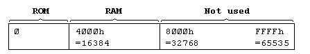
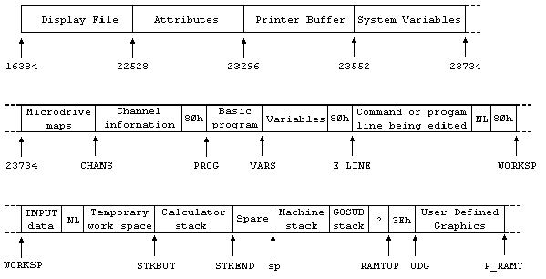
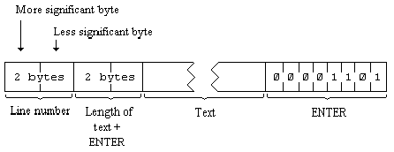
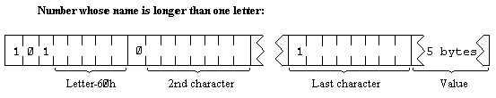
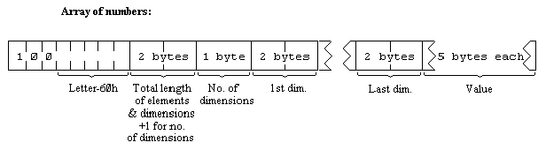
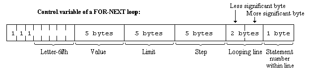
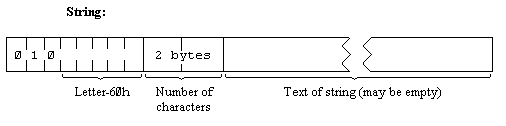
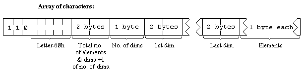

Deep inside the computer, everything is stored as bytes, i.e. numbers between 0 and 255. You may think you have stored away the price of wool or the address of your fertilizer suppliers, but it has all been converted into collections of bytes and bytes are what the computer sees.
Each place where a byte can be stored has an address, which is a number between 0 and FFFFh (so an address can be stored as two bytes), so you might think of the memory as a long row of numbered boxes, each of which can contain a byte. Not all the boxes are the same, however. In tile standard 16K RAM machine, the boxes from 8000h to FFFFh are simply missing altogether. The boxes from 4000h to 7FFFh are RAM boxes, which means you can open the lid and alter the contents, and those from 0 to 3FFFh are ROM boxes, which have glass tops but cannot be opened. You just have to read whatever was put in them when the computer was made. 
To inspect the contents of a box, we use the PEEK function: its argument is the address of the box, and its result is the contents. For instance, this program prints out the first 21 bytes in ROM (and their addresses):
10 PRINT "Address"; TAB 8; "Byte"
20 FOR a=0 TO 20
30 PRINT a; TAB 8; PEEK a
40 NEXT a
All these bytes will probably be quite meaningless to you, but the processor chip understands them to be instuctions telling it what to do.
To change the contents of a box (if it is RAM), we use the POKE statement. It has the form
POKE address, new contents
where 'address' and 'new contents' stand for numeric expressions. For instance, if you say
POKE 31000,57
the byte at address 31000 is given the new value 57 - type
PRINT PEEK 31000
to prove this. (Try poking in other values, to show that there is no cheating.) The new value must be between -255 and +255, and if it is negative then 256 is added to it
The ability to poke gives you immense power over the computer if you know how to wield it; and immense destructive possibilities if you don't. It is very easy, by poking the wrong value in the wrong address, to lose vast programs that took you hours to type in. Fortunately, you won't do the computer any permanent damage.
We shall now take a more detailed look at how the RAM is used but don't bother to read this unless you're interested.
The memory is divided into different areas (shown on the big diagram) for storing different kinds of information. The areas are only large enough for the information that they actually contain, and if you insert some more at a given point (for instance by adding a program line or variable) space is made by shifting up everything above that point. Conversely, if you delete information then everything is shifted down.
The display file stores the television picture. It is rather curiously laid out, so you probably won't want to PEEK or POKE in it. Each character position on the screen has an 8x8 square of dots, and each dot can be either 0 (paper) or 1 (ink) and by using binary notation we can store the pattern as 8 bytes, one for each row. However, these 8 bytes are not stored together. The corresponding rows in the 32 characters of a single line are stored together as a scan of 32 bytes, because this is what the electron beam in the television needs as it scans from the left hand side of the screen to the other. Since the complete picture has 24 lines of 8 scans each, you might expect the total of 172 scans to be stored in order, one after the other; you'd be wrong. First come the top scans of lines 0 to 7, then the next scans of lines 0 to 7, and so on to the bottom scans of lines 0 to 7; then the same for lines 8 to 15; and then the same for lines 16 to 23. The upshot of all this is that if you're used to a computer that uses PEEK and POKE on the screen, you'll have to start using SCREEN$ and PRINT AT instead, or PLOT and POINT.
The attributes are the colours and so on for each character position, using the format of ATTR. These are stored line by line in the order you'd expect.
The printer buffer stores the characters destined for the printer.
The system variables contain various pieces of information that tell the computer what sort of state the computer is in. They are listed fully in the next chapter, but for the moment note that there are some (called CHANS, PROG, VARS, E LINE and so on) that contain the addresses of the boundaries between the various areas in memory. These are not BASIC variables, and their names will not be recognized by the computer. 
The Microdrive maps are only used with the Microdrive. Normally there is nothing there.
The channel information contains information about the input and output devices, namely the keyboard (with the lower half of the screen), the upper half of the screen, and the printer.
Each line of BASIC program has the form: 
Note that, in contrast with all other cases of two byte numbers in the Z80, the line number here is stored with its more significant byte first: that is to say, in the order that you write them down in.
A numerical constant in the program is followed by its binary form, using the character CHR$ 14 followed by five bytes for the number itself.
The variables have different formats according to their different features. The letters in the names should be imagined as starting off in lower case.  
The order of the elements is:
first, the elements for which the first subscript is 1;
next, the elements for which the first subscript is 2;
next, the elements for which the first subscript is 3;
and so on for all possible values of the first subscript.
The elements with a given first subscript are ordered in the same way using the second subscript, and so on down to the last.
As an example, the elements of the 3*6 array b in Chapter 12 are stored in the order b(1,1) b(1,2) b(1,3) b(1,4) b(1,5) b(1,6) b(2,1) b(2,2) .... b(2,6) b(3,1) b(3,2) ... b(3,6).   
The calculator is the part of the BASIC system that deals with arithmetic, and the numbers on which it is operating are held mostly in the calculator stack.
The spare part contains the space so far unused.
The machine stack is the stack used by the Z80 processor to hold return addresses and so on.
The GOSUB stack was mentioned in Chapter 5.
The byte pointed to by RAMTOP has the highest address used by the BASIC system. Even NEW, which clears the RAM out, only does so as far as this so it doesn't change the user defined graphics. You can change the address RAMTOP by putting a number in a clear statement:
CLEAR new RAMTOP
This
RUN also does CLEAR, although it never changes RAMTOP.
Using CLEAR in this way, you can either move RAMTOP up to make more room for the BASIC by overwriting the user defined graphics, or you can move it down to make more RAM that is preserved from NEW.
Type NEW, then CLEAR 23800 to get some idea of what happens to the machine when it fills up.
One of the first things you will notice if you start typing in a program is that after a while the computer stops accepting any more and buzzes at you. It means the computer is chock a block and you will have to empty it slightly. There are also two error messages with roughly the same meaning, 4 Memory full and G No room for line.
The buzz also occurs when you type in a line longer than 23 lines then your typing is not being ignored, though you cannot see it; but the buzz sounds to discourage you from doing any more.
You can adjust the length of the buzz by poking a number into address 23608. The usual length has number 64.
Any number (except 0) can be written uniquely as
m x 2e where
is the sign,
m is the mantissa, and lies between 0.5 and 1 (it cannot be 1),
and e is the exponent, a whole number (possibly negative).
Suppose you write m in the binary scale. Because it is a fraction, it will have a binary point (like the decimal point in the scale of ten) and then a binary fraction (like a decimal fraction); so in binary:
a half is written .1
a quarter is written .01
three quarters is written .11
a tenth is written .000110011001100110011 ... and so on.
With our number m, because it is less than 1, there are no bits before the binary point, and because it is at least 0.5, the bit immediately after the binary point is a 1.
To store the number in the computer, we use five bytes, as follows:
Thus the mantissa m is .11001100110011001100110011001100 in binary (since the 33rd bit is 1, we shall round the 32nd up from 0 to 1), and the exponent e is 3.
Applying our three rules gives the five bytes
There is an alternative way of storing whole numbers between 65535 and +65535: